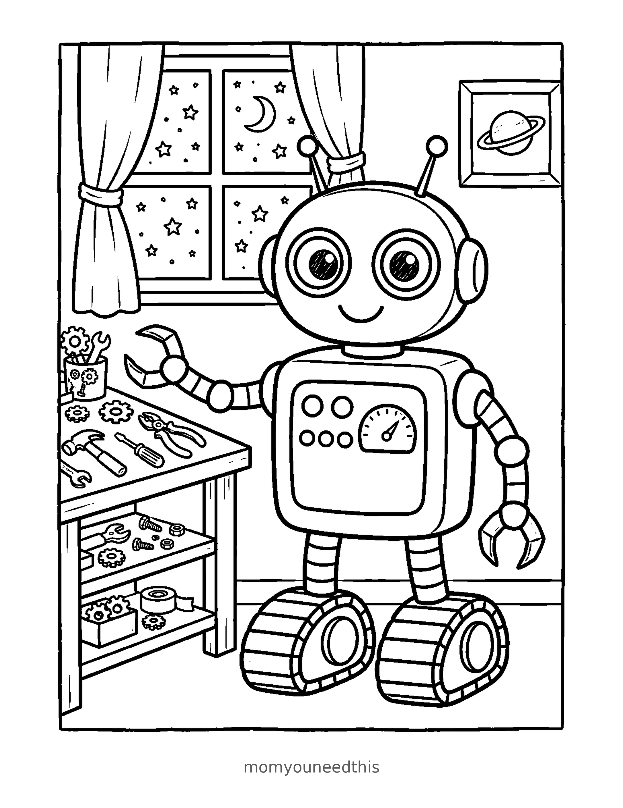
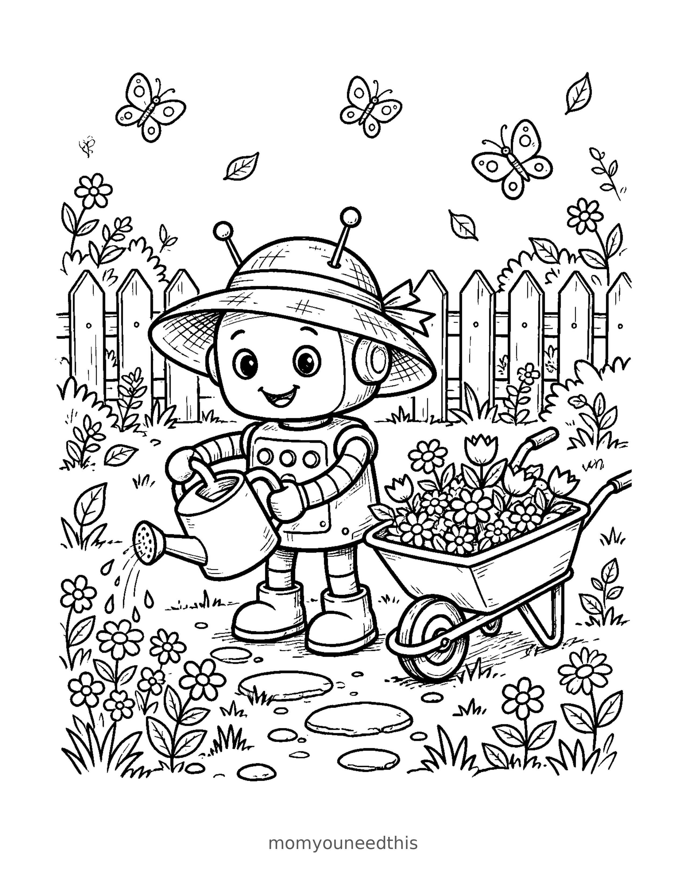
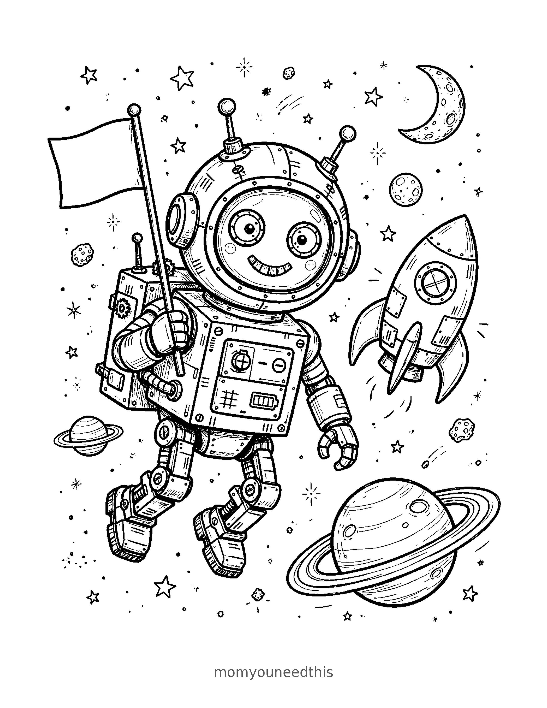

Free Robot Coloring Pages Workshop, Garden & Space Robot Printables
These free robot coloring pages give your child three robot scenes to color — a robot fixing and building at its workbench, a robot watering the garden in a sun hat, and a robot astronaut floating beside its rocket. Download the set below, print at home on letter-size paper, and let the coloring fun begin. No signup needed.
Last updated: November 5, 2026
Quick Answer
Yes — this page has three free printable robot coloring pages: a workshop robot with buttons, gauges and gears, a garden robot with a watering can and a wheelbarrow of flowers, and an astronaut robot drifting by a ringed planet. Bold outlines and big spaces, made for little hands. Download, print on letter-size paper, and hand over the crayons — no signup, no cost.
At a Glance
- Ages: 3–8
- Pages: 3 free printables
- Format: Print at home, letter size
- Cost: Free, no signup
- Supplies: Crayons or markers
- Time: 10–20 minutes
🤖 Robot in the Workshop Coloring Page

🎨 Download Your Free Workshop Robot Coloring Page
A friendly robot at its workbench, surrounded by tools and gears — buttons, a gauge and dials on its chest panel just waiting for a color plan.
⬇️ Download Free Workshop Page 🖨️ Print Workshop Page🎁 Free printable for preschoolers & kids
🌻 Garden Robot Coloring Page

🎨 Download Your Free Garden Robot Coloring Page
This robot has swapped the workbench for a watering can — a sun hat on its head, a wheelbarrow full of flowers at its side and butterflies drifting over the garden fence.
⬇️ Download Free Garden Page 🖨️ Print Garden Page🎁 Free printable for preschoolers & kids
🚀 Astronaut Robot Coloring Page

🎨 Download Your Free Astronaut Robot Coloring Page
One small float for a robot — an astronaut robot drifting beside its rocket, flag in hand, with a ringed planet and the moon shining behind it.
⬇️ Download Free Space Page 🖨️ Print Space Page🎁 Free printable for preschoolers & kids
More Coloring Pages
Tap any picture to open its theme page and download the free printable.


🤖 How To Use This Page
- Browse the three robots and pick the scene your child will love most — workshop, garden or outer space.
- Tap download or print under that design — the file opens full-size, ready for letter-size paper.
- Print a couple of copies so your child can color the same robot silver one day and rainbow the next.
- Color together with crayons or markers, then stand the finished robot up on the fridge or the bedroom door.
🤖 Why Kids Love Robot Coloring Pages
Robots are the perfect coloring subject for kids who love to invent. There is no “right” color for a robot, so every panel, button and gauge on these pages is a decision your child gets to make — silver and sensible, bright and silly, or one color for every single button. These robot coloring pages show one robot living three very different days: fixing things in its workshop, watering the garden, and floating out among the planets.
That variety keeps the set fresh. The workshop page is full of little mechanical details to hunt for, the garden page is calm and open, and the space page turns coloring time into story time — where is the robot going, and what will it find on that ringed planet? Kids practice grip, pressure and color planning while they work, and a finished robot makes a great bedroom-door poster.
🔧 Meet the Three Robots on This Page
The workshop robot. Round head, two antennae and big round eyes, this robot stands at a workbench covered in tools and gears. Its chest panel carries buttons and a gauge, its hands are friendly claws, and tank treads stand in for feet. Through the window behind it, the stars are already out — this robot works late.
The garden robot. The same cheerful machine, off duty. A sun hat sits on its head and a watering can tips over the flower beds, with a wheelbarrow full of blooms beside it and butterflies over the picket fence. The flowers, can and fence are the biggest, boldest shapes in the whole set.
The astronaut robot. Floating in space beside a small rocket ship, helmet on and flag in hand. A ringed planet and the moon hang in the star field around it — the scene with the most little details to discover, and the one older kids tend to claim first.
✏️ Robot Coloring Tips
- Start with the metal. Gray or silver makes a classic robot, and bright buttons pop right off it — but a red, green or purple robot looks just as good.
- Give every button its own color. The chest panel is a rainbow waiting to happen, and counting the buttons as you color them sneaks in a little number practice.
- Go dark in space. The astronaut scene rewards deep blue and black skies, with the planet's rings and the moon shining out of the dark.
- Match the hat to the flowers. On the garden page, color the robot's sun hat the same color as one of the flower beds for a put-together little gardener.
- Add a background. Older kids can draw in extra stars, tools or flowers around the edges — the wide margins leave room to extend the scene.
🤖 Coloring Pages for Different Ages
For ages 3 to 4, start in the garden. The robot is one big central figure, and the flowers, watering can, wheelbarrow and fence are all wide, bold shapes that little hands can fill without worrying about small details. Scribbling is fine at this age — they are learning how crayons move and how hard to press.
For ages 5 to 6, the workshop is the sweet spot. The robot is still big and friendly, but now there are buttons, a gauge, tools and gears to discover and color one by one.
For ages 7 to 8, hand over the astronaut. It carries the most detail — the rocket, the ringed planet, the star field — and rewards patience and careful coloring. Older kids often spend the longest on this one, planning the planet's rings stripe by stripe.
🚀 Ready to Draw Your Own Robot?
Coloring three robots has a way of making kids want to invent a fourth. When that moment comes, our step-by-step robot drawing tutorial shows them how to build a robot of their own, one simple shape at a time — no experience needed, and it pairs perfectly with a freshly colored page for inspiration.
And if space was the favorite scene, keep floating: the space coloring pages carry the adventure on with more rockets, planets and astronauts to print.
🔗 More Free Printables You’ll Love
- How to Draw a Robot — Step by Step The learn-to-draw companion to this page: build your own robot one simple shape at a time.
- Free Space Coloring Pages Rockets, planets and astronauts — the natural next stop after the astronaut robot.
- Free Truck Coloring Pages More big machines with bold outlines, from pickups to work trucks.
- All Free Coloring Pages Browse every free coloring page on the site, organized by theme.
❓ Robot Coloring Pages FAQ
Are these robot coloring pages really free?
Yes — all three designs on this page are free original printables from MomYouNeedThis. Download them, print them at home, and color — no signup and no cost.
What ages are these coloring pages best for?
Kids ages 3 to 8 get the most from this set. Younger children can start on the garden scene, with its big flowers and watering can, while older kids enjoy the buttons and gauges in the workshop and the detail around the rocket.
How do I print a coloring page?
Tap the download button under the design you want, then print the file on regular letter-size paper. The print button opens the full-size page in a new tab if you prefer to print from there.
Which of these robot coloring pages is easiest for toddlers?
The garden design. The robot, the watering can, the flowers and the fence are all big, bold shapes with wide spaces to fill — a perfect first robot page for little hands.
Can I make a coloring book from these pages?
Yes — print all three designs, stack them in order, and staple along the left edge. Add a cover sheet with your child's name on it for a finished homemade robot coloring book.
Do you have a robot drawing tutorial too?
Yes — if coloring leaves your child wanting to draw a robot of their own, our step-by-step robot drawing tutorial builds one up one simple shape at a time. It is free on MomYouNeedThis, linked below the coloring pages.